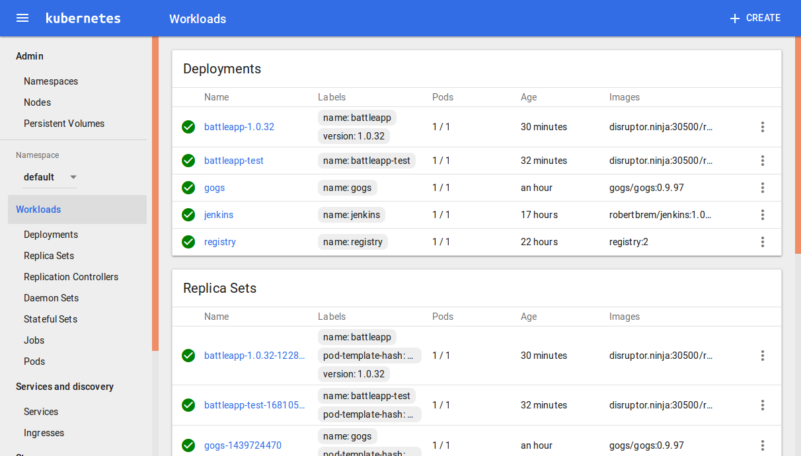

Kubernetes dashboard
To add a dashboard to your cluster we simple have to execute this command:
kc create -f https://rawgit.com/kubernetes/dashboard/master/src/deploy/kubernetes-dashboard.yaml
To access the dashboard we've to find out the NodePort of the service.
kc describe --namespace kube-system svc kubernetes-dashboard | grep NodePort:
NodePort: <unset> 31668/TCP
In this case that's 31668.
Now we can access the dashboard on:
http://disruptor.ninja:31668
Don't expose the service over an
NodePortthat's a security risk.
Access the dashboard without exposing it
We can access the dashboard without exposing it. Therefore we've to delete the existing service.
kc delete service --namespace kube-system kubernetes-dashboard
Then we've to create a dashboard service without a NodePort:
kind: Service
apiVersion: v1
metadata:
labels:
app: kubernetes-dashboard
name: kubernetes-dashboard
namespace: kube-system
spec:
ports:
- port: 80
targetPort: 9090
selector:
app: kubernetes-dashboard
Now we can start this service:
kc create -f service.yml
To access the service we've to proxy the internal cluster traffic to localhost:
kc proxy
In the service we've defined the port 80. Therefore we can access the dashboard on:
http://localhost:8001/ui
